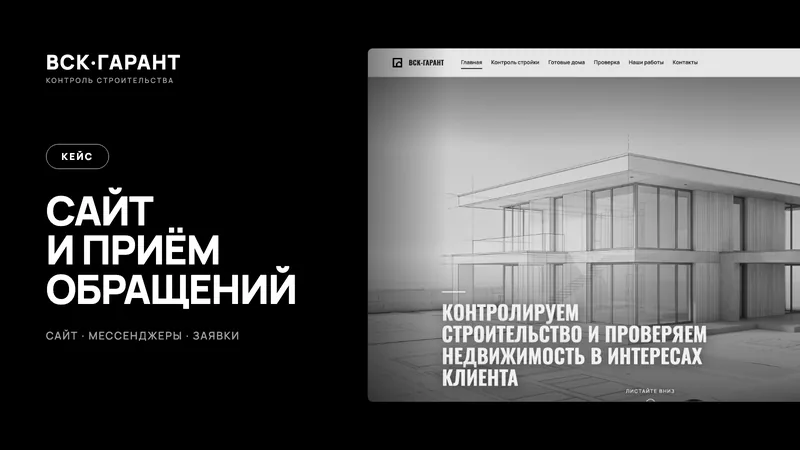

Структура и тексты
Разберём аудиторию, услуги и вопросы клиентов. Соберём страницы, напишем заголовки и объяснения, подготовим места для работ, цен и ответов на возражения.
Создание и редизайн сайтов · Воронеж
Человек приходит на сайт с вопросами: чем вы можете помочь, сколько это стоит и почему вам можно доверять. Соберём ответы, покажем ваши работы и сделаем удобный способ связаться.
Создаём сайты под ключ и обновляем существующие. Лендинг помогает подробно раскрыть одно предложение. Многостраничный сайт подходит, когда у бизнеса несколько услуг, проектов или направлений. Формат выберем по задаче.
Разберём аудиторию, услуги и вопросы клиентов. Соберём страницы, напишем заголовки и объяснения, подготовим места для работ, цен и ответов на возражения.
Оформим сайт в характере вашего бизнеса. Проверим, как читаются тексты, открываются меню и заполняются формы на телефоне и компьютере.
Подключим согласованные способы связи: форму, телефон и мессенджеры. При необходимости обсудим онлайн-запись, уведомления или передачу обращений в CRM.
Зададим понятные адреса страниц, заголовки и описания. Проверим внутренние ссылки, доступность страниц для поиска и карту сайта.
Передадим готовый сайт и доступы, объясним, как работать с ним дальше. Систему управления и возможность самостоятельно менять цены, услуги и материалы согласуем ещё при выборе решения.

Из нашей практики
Создали многостраничный сайт компании по контролю строительства и проверке недвижимости. Подключили форму заявки, мессенджеры и учёт обращений.
Посмотреть проект ↗Стоимость зависит от количества страниц, готовности текстов и фотографий, дизайна и интеграций. После обсуждения подготовим состав работ и смету. Домен, хостинг и платные сервисы укажем отдельно, если они нужны.
Работаем с бизнесом Воронежа и области. Задачу и материалы можно обсудить онлайн. Сроки фиксируем после того, как определим объём работ.
Получить расчёт для моей задачи ↗Да. Проверим структуру, тексты, мобильную версию и формы. После этого предложим доработку отдельных страниц или редизайн, в зависимости от состояния сайта.
Подготовим тексты на основе ваших услуг, материалов и ответов. Факты, цены и условия согласуем с вами. Фотографии можем взять из вашего архива или организовать съёмку.
Мы подготовим его к индексации. Обход и включение страниц в поиск выполняют поисковые системы. Рост по конкурентным запросам требует дальнейшей работы с контентом, сайтом и репутацией компании.
Да, если такая возможность предусмотрена выбранным решением. Заранее определим, какие материалы вы будете обновлять, и покажем, как это делать.
Обсудим ваш проект
Пришлите ссылку на сайт или соцсеть и коротко опишите задачу. Ответим в течение рабочего дня.
+7 952 101 90 67